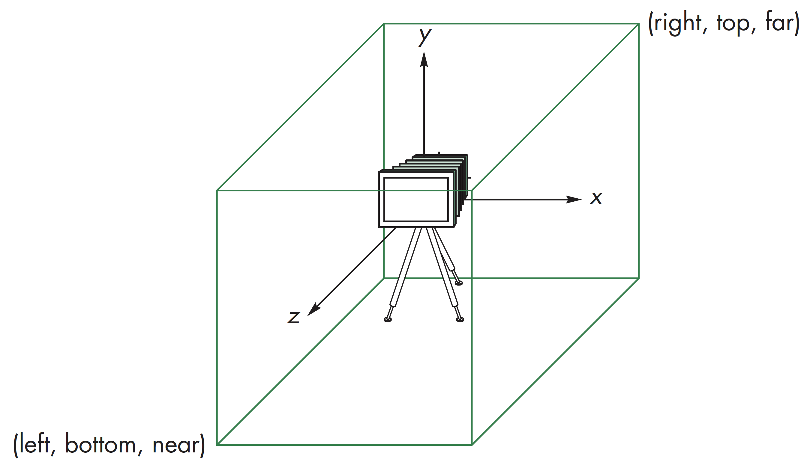

<html>
<head>
<meta http-equiv="Content-Type" content="text/html;charset=utf-8">
<title>First WebGL Demo</title>
<!-- 顶点着色器和片元着色器代码 -->
<script id="vertex-shader" type="x-shader/x-vertex">
attribute vec4 vPosition;
void main(){
gl_Position = vPosition;
}
</script>
<script id="fragment-shader" type="x-shader/x-fragment">
precision mediump float;
void main(){
gl_FragColor = vec4( 1.0, 1.0, 1.0, 1.0 );
}
</script>
<!-- 一组相关的JS库 -->
<script type="text/javascript" src="../../../js/common/webgl-utils.js"></script>
<script type="text/javascript" src="../../../js/common/initShaders.js"></script>
<script type="text/javascript" src="../../../js/common/glMatrix-0.9.5.min.js"></script>
<!-- 绘制三角形的JS代码 -->
<script type="text/javascript" src="../../../js/ch01/square.js"></script>
</head>
<body>
<canvas id="square-canvas" style="border:none;" width="500" height="500"></canvas>
</body>
</html>
"use strict";
var gl;
var points;
window.onload = function init(){
var canvas = document.getElementById( "square-canvas" );
gl = WebGLUtils.setupWebGL( canvas );
if( !gl ){
alert( "WebGL isn't available" );
}
// Four Vertices
var vertices = [
-0.5, -0.5,
0.5, -0.5,
0.5, 0.5,
-0.5, 0.5
];
// Configure WebGL
gl.viewport( 0, 0, canvas.width, canvas.height );
gl.clearColor( 0.0, 0.0, 0.0, 1.0 );
// Load shaders and initialize attribute buffers
var program = initShaders( gl, "vertex-shader", "fragment-shader" );
gl.useProgram( program );
// Load the data into the GPU
var bufferId = gl.createBuffer();
gl.bindBuffer( gl.ARRAY_BUFFER, bufferId );
gl.bufferData( gl.ARRAY_BUFFER, new Float32Array( vertices ), gl.STATIC_DRAW );
// Associate external shader variables with data buffer
var vPosition = gl.getAttribLocation( program, "vPosition" );
gl.vertexAttribPointer( vPosition, 2, gl.FLOAT, false, 0, 0 );
gl.enableVertexAttribArray( vPosition );
render();
}
function render(){
gl.clear( gl.COLOR_BUFFER_BIT );
gl.drawArrays( gl.TRIANGLE_FAN, 0, 4 );
//gl.drawArrays( gl.TRIANGLES, 0, 9 );
//gl.drawArrays( gl.TRIANGLE_FANS, 3, 6 );
}
构建对象的点的单位由应用程序决定，这些点所在的坐标系称为世界坐标系，也可称为物体坐标系。观察也发生在此坐标系中，生成图像的像素点是在窗口坐标系中
WebGL也用一些在着色器中十分重要但在应用程序中不可见的内部表示，其中最为重要的是坐标裁剪
顶点着色器的输出是在裁剪坐标系中，面片着色器从光栅化后的结果中获得的输入是表示在窗口坐标系中
应用程序提供的对象顶点信息可以是在任意坐标系统中，但是着色器最终生成的gl_Position都是在裁剪坐标系中。
WebGL将相机默认放置在物体对象空间的坐标原点，朝向z轴负方向
默认的观察空间是以原点为中心，长度为2的立方体
默认的正交观察中，所有的点沿着Z轴正方向投影到平面z=0上
物体对象变换一般发生在光栅化之前，通过一系列变换函数实现，变换也可以用于在不同的坐标系之间转换。在OpenGL3.1版本以前的很多变换函数都已过时
变换可以有三种途径实现，分别是通过应用程序即JavaScript程序代码，或是在着色器程序中，或是在矩阵工具库中提供相关函数